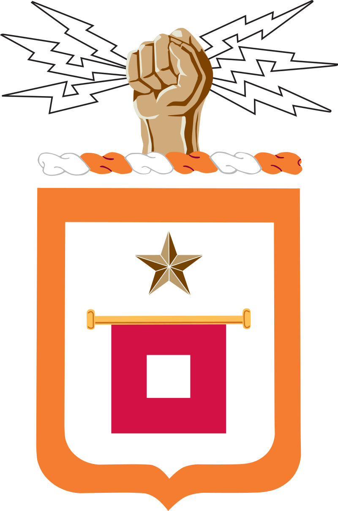
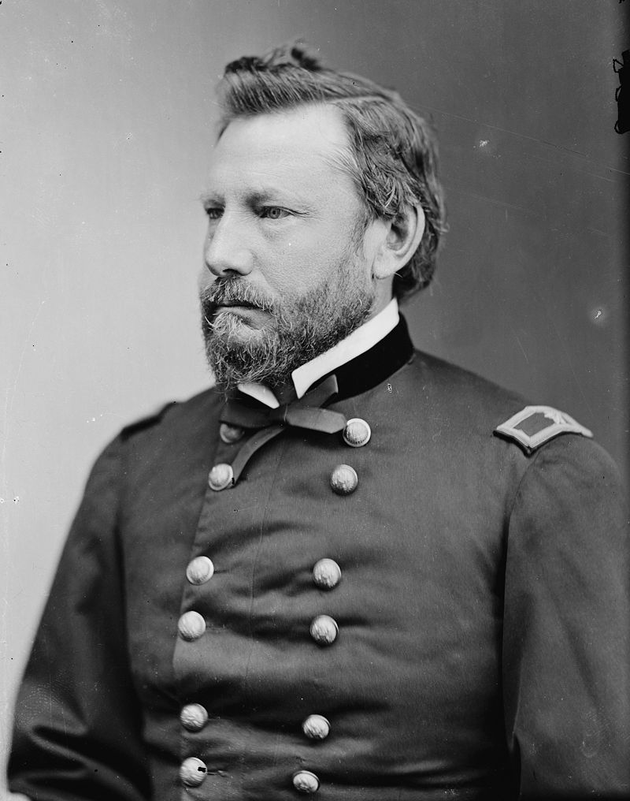
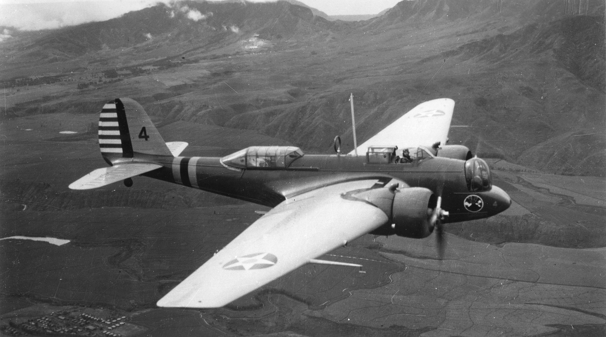
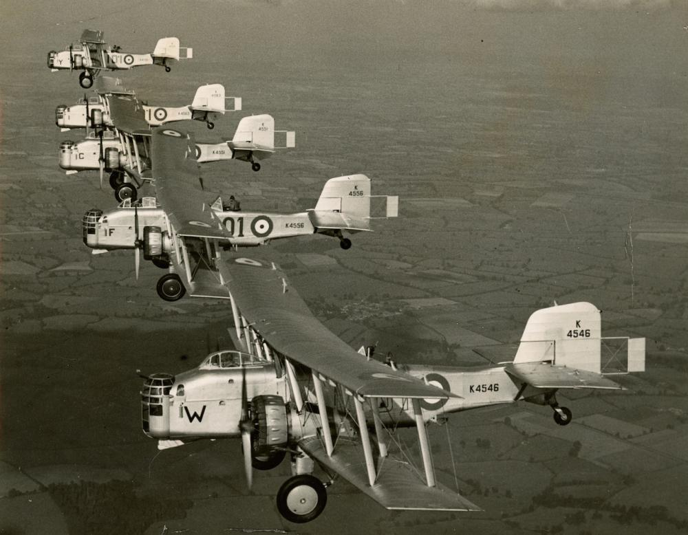
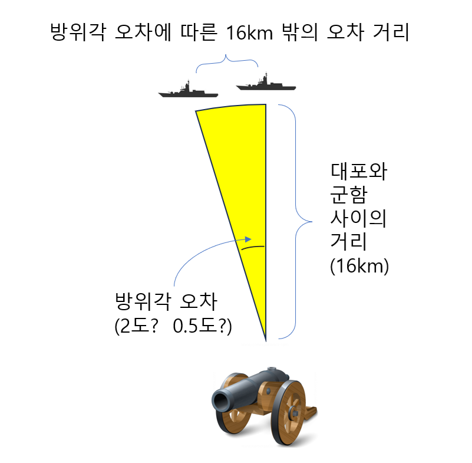

미육군의 레이더 개발 이야기 (1) - 의외로 섬세한 육군
게시: 2024-05-16T06:30:30+09:00
<뭐? 해군놈들이 뭘 만들었다고?> 시간을 거슬러 1920년대로 잠깐 이동. 미육군에서도 장거리 목표물 탐지 및 거리 측정에 대한 연구를 하고 있었음. 당시 미육군 통신사령부 (Signal Corps)에서는 전자파보다는 적외선에 더 큰 가능성을 두고 적외선 감지에 대한 연구를 주로 하고 있었고, 또 음향 탐지를 통해 적군의 항공기를 탐지하는 것도 연구하고 있었음. 그러나 일부 적은 수의 인원들은 전자파를 이용해서도 그런 것이 가능하다고 보고 전자파를 연구. 다만 그 팀은 항공기가 두 전파 발신원 사이를 통과할 때 간섭을 일으킬 텐데 그 간섭 효과를 측정하면 항공기를 탐지할 수 있다는 개념에 집중하는 등 애초부터 방향을 잘못 잡았고, 결국 실질적인 성과는 전혀 없었음.

(미육군 통신사령부 (Signal Corps)는 1856년 Albert J. Myer라는 군의관이 통신 전문 병종이 필요하다고 제안한데서 시작된 것으로서, 마이어는 간단한 깃발 신호를 이용하여 원거리에서의 신호 전달을 제시. 그의 제안은 남북전쟁 기간 중이던 1863년 결실을 맺어 정식으로 통신사령부가 발족되었고 마이어는 그 초대 사령관이 됨. 위 그림이 신호 사령부의 문장.)

(이 분이 미육군에 통신사령부를 만드신 Albert J. Myer 소령. 군의관을 때려치우고 신호 장교로 새출발하신 이 분은 훗날 준장까지 승진하였으나 비교적 이른 나이인 51세에 사망.)
그러던 1935년, 통신사령부에 새로 합류한 연구원이 '미해군에서는 전파를 이용해서 원거리 목표물 탐지 및 거리 측정을 하고 있다더라'라며 미해군 연구소(United States Naval Research Laboratory)에 사람을 보내 견학을 해보자고 건의. 모든 국가의 군대에 다 있는 일이지만 미군도 육군과 해군의 알력이 심한 편. 미육군으로서는 매우 자존심 상하는 일이었지만 그래도 '설마 무식한 뱃놈들이 뭐 대단한 것을 만들었겠어?'라는 심정으로 사람을 보냄. 다녀온 연구원은 입이 떡 벌어져 전자파를 이용한 방향 및 거리 탐지, 즉 radar (Radio Detection And Ranging)에 대해 매우 긍정적인 보고서를 제출. 일이 이렇게 되자 미육군 통신사령부에서도 레이더에 대해 진지하게 연구를 시작. 문제는 돈. 갑자기 새로운 연구를 시작하자니 돈이 없었음. 통신사령부에서는 초조하게 여기저기 육군내 각 사령부의 연줄을 당겨 레이더라는 신기술에 대한 수요를 만들어 내려고 부지런히 영업을 했는데, 결국 거기에 걸려든 것이 해안포(Coast Artillery) 사령부. 통신사령부는 1936년 2월 '안개, 비, 연막, 야간 상황에서도 14km 거리의 목표물을 탐지할 수 있는 해안포 조준 시스템'에 대한 요청서와 함께 예산을 받아냄. 이 예산만으로는 너무 부족했으므로 이들은 여기저기 다른 프로젝트에서 예산을 조금씩 전용하는 등 사실상 도둑질을 해가며 연구를 계속. <폭격기는 바람에 흘러> 이렇게 해군에게 자극 받아 번개불에 콩 볶아먹는 식으로 진행된 연구는 매우 빠른 결과를 냈는데, 불과 10개월만에 작동이 가능한 시제품을 만들어냈고, 15개월 뒤인 1937년 5월에는 육군내 높으신 관계자들을 모셔다 놓고 데모까지 수행하기로 함. 데모 내용은 해안포 사령부가 주문했던 것과는 다소 달랐을 뿐만 아니라 매우 야심찬 것이었는데, 바로 야간에 항공기를 탐지하는 것. 이들은 한밤중에 정해진 코스로 폭격기 Martin B-10를 날게 하고, 그걸 레이더를 이용해 탐지해보이는 데모를 시연. 그러나 최악의 상황이 벌어짐. 정해진 시간, 정해진 지점에 레이더를 쪼아보았으나, 폭격기가 감지되지 않았던 것. 패닉 상태에 빠진 레이더 개발팀은 이럴 리가 없다면서 정해진 비행 항로뿐만 아니라 거의 온 하늘을 샅샅이 레이더로 훑었으나 폭격기를 찾을 수가 없었음.

(WW1과 WW2 사이에만도 엄청난 기술 발전이 있었는데, 가령 폭격기. 사진1은 WW2 시대 폭격기의 새로운 장을 연 Martin B-10. All-metal 단엽기, 접이식 랜딩기어, 밀폐형 조종석, turret형 기관총좌 등 WW2 폭격기의 전형적인 모습인데 이게 1934년에 최초 도입되었음. 저 Martin이 Lockheed Martin의 그 Martin 맞음)

(이건 동일한 연도인 1934년 도입된 영국 Boulton Paul Overstrand. B-10을 보기 전에는 저것만 해도 당시 혁신 기술이라고 난리가 났었다고.) 그러다 애초에 항공대와 협의된 것보다 무려 16km나 떨어진 하늘에 레이더를 쏘아보니... 거기서 딱 신호가 잡힘. 나중에야 알았지만 폭격기 조종사도 야간에 비행하는 것이라 그저 추측항법(dead reckoning)에 의존하여 항로를 잡았는데, 때마침 그 날 측풍이 강해 폭격기가 그렇게 멀리까지 떠내려 갔었던 것. 그렇게 레이더로 찾아낸 방위각과 고도로 강력한 대공 탐조등을 켜보니, 정말 감탄스럽게도 딱 처음 켠 그 탐조광 한가운데에 유유히 날고 있는 폭격기가 보였음. 데모 초반, 당황하는 레이더 개발진을 보며 혀를 끌끌 차던 미육군의 높으신 분들은 이 데모를 보고 매우 깊은 인상을 받음.
<대공 레이더보다 포격용 레이더가 더 정밀해야 한다고?> 그런데 여기서 잠깐. 레이더가 지시한 방위각과 고도로 탐조등을 켰더니 그 불빛 한가운데에 폭격기가 날고 있었다고? 그거 너무 정확한 거 아님? 더군다나 1937년이면 기껏해야 1m가 넘는 간 파장의 전파를 썼을 텐데 그렇게 정확할 수가 있나? 미육군 통신사령부에서 개발하던 이 레이더는 분명히 명목상으로는 해안포를 위한 조준용 레이더. 그에 비해 영국의 로열 에어포스가 루프트바페의 공습에 대비하여 열심히 만들던 Home Chain radar는 대공 레이더. 대공 레이더와 포병 조준용 레이더는 어느 것이 더 정확해야 할까? 그냥 막연히 생각하면 항공기 관련 레이더가 더 강력하고 더 정확해야 할 것 같음. 실제로 훨씬 더 장거리에서 항공기를 탐지해야 하는 대공 레이더의 출력이 더 강력하기는 하지만, 정밀도에 있어서는 의외로 포병 조준용 레이더가 더 정밀해야 함. 생각해보면 이건 당연. 로열 에어포스의 Home Chain radar이건 미해군의 CXAM radar이건 대공 레이더란 기본적으로 조기경보용 레이더(Early Warning Radar)임. 즉, 저 멀리서 뭔가가 날아온다는 것을 대충 방향과 거리만 알려주면 되는 것. 정밀도는 그닥 정확할 필요가 없는 것이, 어차피 그 탐지 정보에 따라 날려보낼 것이 신이 만들어주신 초정밀 탐지기구인 Mark I. Eyeball (즉, 그냥 사람의 눈)을 장착한 조종사가 탄 전투기이기 때문. 그러니까 대충 그 근처로 아군 전투기를 유도해주기만 하면 그 다음부터는 조종사가 알아서 눈으로 적기를 확인하고 격추. 그에 비해 포병 조준용 레이더가 알려주는 탐지 정보에 따라 발사되는 것은 눈도 귀도 없는 그냥 포탄. 포탄이 대충 10마일, 그러니까 16km를 날아간다고 가정할 때, 만약 레이더가 탐지한 방위각에 2도 오차가 있었다고 하면 그 작은 차이가 16km 밖에서는 얼마나 큰 오차를 만들어낼까?

(커다란 해안포도 사거리가 16km 이내이지만, 전함에서 쏘는 주포는 사거리가 24km를 초과하여 눈에 보이지도 않는 수평선 너머로 훌쩍 넘어감. 1940년 7월 지중해에서 벌어진 칼라브리아 해전에서 로열 네이비의 전함 HMS Warspite가 이탈리아 전함 쥴리오 체사레(Giulio Cesare)를 24km 밖에서 명중시킨 바 있음.) 이때 그 오차 거리를 그냥 원호로 보고 계산하는 것은 매우 간단. 라디안(radian)을 구하는 공식을 이용하면 됨.

(전에도 썼던 라디안에 대한 그림인데, 여기서 다시 활용) 원호 길이 = 라디안 * 반경 = 각도 * [(2*3.14)/360] * 반경 = 2 * [(2*3.14)/360] * 16 = 0.5585 km
그러니까 2도 차이가 나면 16km 밖에서는 559m 정도의 오차가 발생. 4만톤급 전함이라고 해도 길이가 250m가 채 안되는데, 저 정도의 오차라면 그냥 대부분 다 빗나간다는 이야기. 즉 조준용으로는 쓸모가 없음, 조준용으로 쓸모가 있으려면 0.5도, 그러니까 16km 밖에서 대략 140m 정도의 오차를 내는 수준이 되어야 함. 그런데 저 정도의 정밀도를 1.5m짜리 장파를 가지고 어떻게 만들지? 미육군 통신사령부는 그걸 해냄. 그 이야기는 다음에.